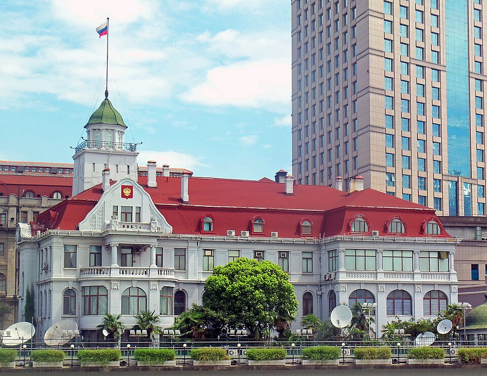

Дом 1916 года. Работает до сих пор
1916年的房子，今天还在用
Консульство на Хуанпу, 20黄浦路20号的领事馆
Консульство России на Хуанпу, 20, достроили 1 декабря 1916 года и открыли 1 (14) января 1917-го. В 1924 году дом передали советскому вице-консулу, казаки сняли орла. В 1962-м консульство закрыли, в 1986-м открыли снова. По воскресеньям здесь православная служба: утреня в 8:00, литургия в 9:30, вход с загранпаспортом.
黄浦路20号的俄罗斯领事馆1916年12月1日建成，旧历1917年1月1日（新历14日）开馆。1924年交给苏联副领事，哥萨克摘了鹰。1962年关闭，1986年重开。每星期天这里有东正教礼拜：晨祷8:00，圣体礼9:30，凭护照进。
Хуанпу-лу, 20, район Хункоу, сразу за мостом Вайбайду через Сучжоу. Генеральное консульство России.
虹口区黄浦路20号，过了外白渡桥就到。俄罗斯联邦驻上海总领事馆。

Прочитать за минуту一分钟读完
Дом консульства заложили 28 октября 1914 года и достроили 1 декабря 1916-го. Архитектор — Ханс Либ. Здание и сейчас консульство России.
领事馆1914年10月28日奠基，1916年12月1日建成。建筑师是汉斯·利布。今天这栋楼还是俄罗斯领事馆。
Узнать подробнее了解更多
Есть рассказ, что землю под фундамент привезли из России. Так называется очерк об истории консульства. Сам текст очерка у меня не открылся, поэтому держу это как легенду, не как факт.
Открывали дом 1 января 1917 года по старому стилю, 14-го по новому. Китайские певчие пели «Боже, царя храни». Гостей было до четырёхсот, среди них Сунь Ятсен.
В 1924 году дом передали советскому вице-консулу. Консул Гроссе уходить не хотел, казаки полковника Иванова десять дней держали здание. 24 июля Гроссе сдал дом. Перед уходом с фасада сняли двуглавого орла, колонны порубили саблями.
В сентябре 1962 года консульство закрыли. В 1986-м здание вернули, 15 декабря консульство открылось снова.
Каждое воскресенье в консульстве православная служба: утреня в 8:00, литургия в 9:30. Пускают с действующим загранпаспортом. Расписание беру со страницы «Русского Шанхая», даты на ней нет. Перед поездкой лучше проверить его там же.
15 ноября 2026 года в канале был пост: после литургии здесь служили молебен для сербских прихожан и освящали колач — круглый хлеб, с которым сербы празднуют славу, день святого покровителя семьи.
有个说法：地基下的土是从俄国运来的。一篇讲领事馆历史的文章就用这句话当标题。文章正文我没打开，所以只当传说，不当事实。
开馆是旧历1917年1月1日，新历1月14日。中国唱诗班唱了俄国国歌。客人有四百位左右，孙中山也在。
1924年，房子交给苏联副领事。格罗瑟领事不肯走，伊万诺夫上校的哥萨克守了这栋楼十天。7月24日格罗瑟交出房子。走之前双头鹰从立面上摘下来，柱子被马刀砍过。
1962年9月领事馆关闭。1986年房子还回来，12月15日重新开馆。
每个星期天领事馆里有东正教礼拜：晨祷8:00，圣体礼9:30。要带有效护照。时间表来自「俄罗斯上海」网站，那页没有日期。去以前最好再查一下。
2026年11月15日频道里有一条帖子：圣体礼之后为塞尔维亚教友做了祈祷，祝圣「科拉奇」——塞尔维亚人过家族守护圣人节「斯拉瓦」用的圆面包。
На карте在地图上
Важно не перепутать别弄混
1 января 1917 по старому стилю и 14 января по новому — один день. «Землю привезли из России» — легенда из названия очерка, не проверенный факт. Про «ключи 1986 года» источников я не нашёл: пишу, что здание вернули.
旧历1917年1月1日和新历1月14日是同一天。「土从俄国运来」是文章标题里的传说，不是核对过的事实。「1986年还钥匙」我没找到出处，只写房子还回来了。
Вопрос для школьника给同学的问题
Почему в 1924 году с фасада сняли орла, а дом остался консульством?
为什么1924年把鹰摘了，房子却还是领事馆？
Что установлено точно已经核对过的
Даты стройки, архитектор, открытие 1917, передача 24 июля 1924, закрытие 1962, открытие 15 декабря 1986, расписание воскресных служб. Страницы ниже.
建造日期、建筑师、1917年开馆、1924年7月24日移交、1962年关闭、1986年12月15日重开、星期天礼拜时间。出处在下面。
Что пока требует проверки还要再核对的
У страницы с расписанием служб нет даты. Перед поездкой проверьте её. Своего кадра ещё нет.
礼拜时间那页没有日期，去以前再查一下。我自己的照片还没有。
Источники этой страницы这一页的出处
- История генконсульства в Шанхае — МИД России. Закладка 28 октября 1914, окончание 1 декабря 1916, архитектор Либ, передача 24 июля 1924, казаки Иванова, закрытие в сентябре 1962, открытие 15 декабря 1986.1914年10月28日奠基，1916年12月1日建成，建筑师利布，1924年7月24日移交，伊万诺夫的哥萨克，1962年9月关闭，1986年12月15日重开。
- Магазета: история российского консульства (В. Шаронова, 2018). 1 января 1917, певчие, до 400 гостей, Сунь Ятсен; орёл и колонны в 1924; возврат здания в 1986.1917年1月1日，唱诗班，约四百客人，孙中山；1924年的鹰和柱子；1986年还回房子。
- Генеральное консульство России в Шанхае — Дом русского зарубежья. Дом 1916 года, ссылка на очерк «Землю под фундамент привезли с родины».1916年的房子，引用《地基下的土从祖国运来》一文。
- Расписание богослужений в Шанхае — Русский Шанхай. Службы в консульстве по воскресеньям: утреня 8:00, литургия 9:30, нужен загранпаспорт. Дата страницы не указана.每星期天在领事馆礼拜：晨祷8:00，圣体礼9:30，要带护照。页面没有日期。
- Пост канала 15 ноября 2026: колач и слава. Молебен для сербских прихожан после литургии в консульстве.领事馆圣体礼后为塞尔维亚教友的祈祷。
Рядом по смыслу:意思上相邻的： Русско-Китайский банк华俄道胜银行 Два храма两座教堂
Последняя правка страницы: 19 ноября 2026. Это дата правки сайта, не дата исторического события.本页最近一次修改：2026年11月19日。这是网页的修改日期，不是历史事件的日期。